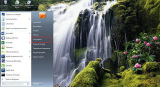
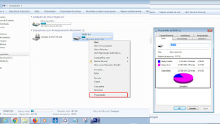
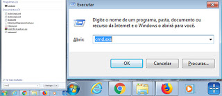
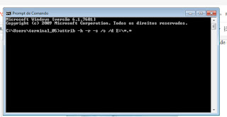

Primeiro Post
Qual o futuro desse site?
Eu fiz esse site mais como um aprendizado para meu html, sendo mais uma oportunidade de aprendizado para
elevar o meu nível de aprendizado, mas tem como propósito, futuramente fazer postagens e novidades sobre
tecnologia, mas levado pro lado da programação em si, como coisas que estou aprendendo, e coisas que estou
fazendo. Por exemplo fiz alguns cursos de programação e até hoje não sei muita coisa, já que sou devagar
aprendendo mesmo, mas só fazendo o curso de html 5 e css que aprendi a usar o github corretamente, sendo que
vi essa ferramenta e usava em outros cursos, mas como nesse caso espeífico, eu fazia algumas tarefas no trabalho
e outras tarefas eu fazia no notebook em casa mesmo, eu tive que colocar em prática o uso dele. Nesse momento estou em casa utilizando o notebook, mas todos os meus arquivos estão no Git, e o que comecei no trabalho posso continuar em casa sem dor de cabeça. É só mesmo para compartilhar essas besteiras com vocês.
Primeiro Post
Qual o futuro desse site?
Eu fiz esse site mais como um aprendizado para meu html, sendo mais uma oportunidade de aprendizado para
elevar o meu nível de aprendizado, mas tem como propósito, futuramente fazer postagens e novidades sobre
tecnologia, mas levado pro lado da programação em si, como coisas que estou aprendendo, e coisas que estou
fazendo. Por exemplo fiz alguns cursos de programação e até hoje não sei muita coisa, já que sou devagar
aprendendo mesmo, mas só fazendo o curso de html 5 e css que aprendi a usar o github corretamente, sendo que
vi essa ferramenta e usava em outros cursos, mas como nesse caso espeífico, eu fazia algumas tarefas no trabalho
e outras tarefas eu fazia no notebook em casa mesmo, eu tive que colocar em prática o uso dele. Nesse momento estou em casa utilizando o notebook, mas todos os meus arquivos estão no Git, e o que comecei no trabalho posso continuar em casa sem dor de cabeça. É só mesmo para compartilhar essas besteiras com vocês.
Pen Drive com Vírus de atalho, como resolver!
Fala galera, Eu estava com um pen drive para recuperar os arquivos pois o rapaz tinha pegado o vírus que transforma tudo em atalhos, e não conseguia mais acessar. Como já sofri muito com isso resolvi publicar aqui, é uma coisa simples mais que ajuda muito na hora do aperto.

De qualquer forma o primeiro passo é verificar se o pen drive só está com esse vírus de atalho mesmo, ai é só apertar o botão de Windows e clicar em meu computador, que é onde marquei com um quadrado vermelho, ou apertar a tecla Windows junto com a letra E que irá para o mesmo lugar.

Após isso aparecerá o local onde abre o pendrive, quando visualizar o pendrive clica com o botão esquerdo em cima do pendrive e clica com o botão direito em propriedades, irá aparecer as informações sobre quantidade de megas/gigas que está sendo ocupado no pendrive, se o seu estiver sem nada, infelizmente esse método não irá funcionar, porém se estiver com a mesma quantidade de gigas que tinha antes do vírus pegar nessa página tem a solução.

Para fazer esse processo é só abrir o cmd do windows pode apertar o atalho de windows mais a letra R e escrever cmd e dar enter ou apertar a tecla windows e procurar cmd, quando aparecer clicar em cima dele e escrever o comando, ou somente copiar e colar no cmd, lembrando que o colar só funciona se clicar dentro do cmd com o botão esquerdo e e clicar em colar.

Só utilizar o CMD do windows para estar realizando este comando simples attrib -h -r -s /s /d E:\*.* (lembrando que a letra I é a mesma letra do diretório do seu pen drive) que ao terminar de fazer esse comando vai ser criada uma pasta no pendrive com os arquivos dentro. Só fazer a verificação da pasta que está dentro conferindo os arquivos, apagar os atalhos e agradecer a Deus por ter recuperado.

Esse foi só um mini tutorial, para ajudar quem por acaso esteja precisando, qualquer dúvidas deixar o comentário ai que ajudarei no que puder.